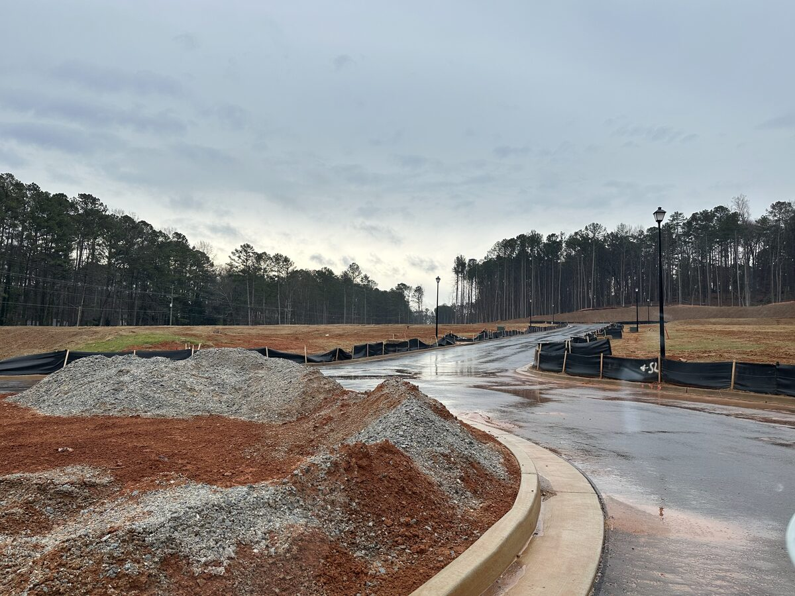

Subdivision · Active
Residential Subdivision II
A 23-home residential subdivision set within an established enclave adjacent to Stone Mountain — a quiet, tucked-away location with convenient access to major commercial corridors.
Land development is underway, with vertical construction to follow upon permit completion.


Full-cycle equity development from land acquisition to disposition.
DeKalb County · Metro Atlanta MSA